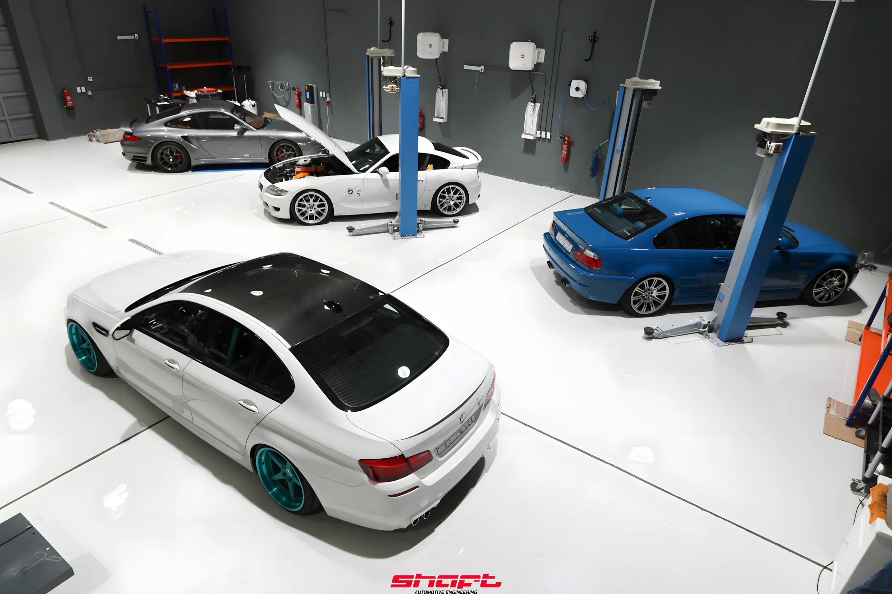

BMW, MINI and motorcycle service, diagnosis and tuning in Dammam.
We started on our own BMWs.
In 1999 there was no good BMW garage near us, and the dealer cost a fortune every visit. So we worked on our own BMW and MINI cars in a home garage.
Friends brought theirs because the work was clean and we found the real cause of a problem without changing parts it didn't need. That is how the name was built. Today SHAFT is an automotive engineering service centre in Dammam, working to OEM service standards with OEM-approved tools. Read our story

- 1999BMW and MINI work in our home garage, for ourselves and then for friends.
- 2006Car and motorcycle tuning, from national autocross races to motor shows.
- 19+years of experience behind the service centre we opened in Dammam.
Which service do you need?
Routine maintenance or a problem to solve, we take care of you and your car. We use OEM diagnostic tools and quality parts and fluids, on all makes and models.
- 01Quick serviceInterval maintenance: engine oil and filter change, with the other parts that are due.
- 02
 A/C serviceWe check and refill the A/C system with an automatic machine, to OEM standards.
A/C serviceWe check and refill the A/C system with an automatic machine, to OEM standards. - 03Full check & diagnosisOEM diagnostic tools on every system, the ECUs and the electronics.
- 04
 Oil & brake checksThe Works: oil change, tyre rotation, brake inspection, battery test and a multi-point check.
Oil & brake checksThe Works: oil change, tyre rotation, brake inspection, battery test and a multi-point check. - 05
 MotorcyclesService and tuning for motorcycles, in their own bay next to the cars.
MotorcyclesService and tuning for motorcycles, in their own bay next to the cars. - 06Performance & tuningTuning since 2006, with G-POWER and Turner Motorsport parts.
Inside the workshop
Passionate mechanics and engineers, OEM service standards and OEM-approved tools. Integrity and quality are our values, at reasonable cost.

Performance
Custom tuning has been part of SHAFT since 2006, on cars and motorcycles. The brands we work with:
- G-POWERHigh-performance products for BMW and Mercedes-Benz.
- Turner MotorsportHigh-performance BMW parts and OEM BMW replacement parts.

Book a service or an inspection.
Send us the car, the year and what it needs. A photo of the warning light helps.
Or email info@shaftauto.com
Find us
Open now1st Industrial District, 9006
Dammam 32234, Saudi Arabia
| Saturday | 8:30–12 · 2–6pm |
|---|---|
| Sunday | 8:30–12 · 2–6pm |
| Monday | 8:30–12 · 2–6pm |
| Tuesday | 8:30–12 · 2–6pm |
| Wednesday | 8:30–12 · 2–6pm |
| Thursday | Closed |
| Friday | Closed |